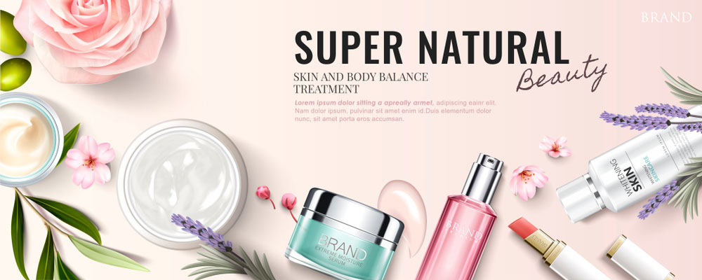

Mỹ phẩm là một trong những công cụ hỗ trợ làm đẹp mà tất cả mọi người đều yêu thích, ngày nay với sự tiến bộ của ngành thẩm mỹ đã cho ra đời rất nhiều dòng sản phẩm khác nhau.
Không thể phủ nhận công dụng và hiệu quả tuyệt vời mà mỹ phẩm mang lại trong quá trình làm đẹp, phòng ngừa và đặc trị cho tất cả chúng ta
Dùng mỹ phẩm làm đẹp tại nhà là nhu cầu cần thiết cho mỗi người, ai cũng muốn mình trẻ đẹp mãi mãi.
Mỹ phẩm cần cho quá trình nuôi dưỡng, ngăn ngừa các tổn thương da từ bên ngoài và phục hồi lại làn da đã bị thương.
Hãng mỹ phẩm Cezanne chúng tôi tự hào khi có một danh mục sản phẩm cao cấp, chăm sóc sắc đẹp từ bên ngoài lẫn bên trong bao gồm 6 dòng sản phẩm xuất xứ từ các thương hiệu nổi tiếng của Pháp, Ý, Mỹ, Nhật và cả quốc gia hàng đầu về Nhật bản
 Chào các bạn, chúng tôi là những người sống và làm việc nhiều năm tại Nhật Bản, hiểu được về đất nước, con người, văn hóa Nhật Bản. Đặc biệt chúng tôi thấy rằng phụ nữ Nhật không chỉ nổi tiếng về nữ tính, khả năng chăm sóc gia đình mà họ còn có vóc dáng cao ráo, nước da trắng trẻo, mịn màng, đẹp tự nhiên, cách làm đẹp không phải bằng dao kéo mà bằng liệu những pháp tự nhiên là một trong những bí kíp của riêng họ. Chúng tôi muốn chia sẽ những bí quyết làm đẹp của người Nhật đến với Việt Nam chúng ta thông qua việc chia sẻ cách làm đẹp và giới thiệu những sản phẩm mỹ phẩm Nhật Bản chất lượng nhất, được sử dụng rộng rãi tại nội địa Nhật cũng như trên thế giới để giới thiệu với quý khách .
Chào các bạn, chúng tôi là những người sống và làm việc nhiều năm tại Nhật Bản, hiểu được về đất nước, con người, văn hóa Nhật Bản. Đặc biệt chúng tôi thấy rằng phụ nữ Nhật không chỉ nổi tiếng về nữ tính, khả năng chăm sóc gia đình mà họ còn có vóc dáng cao ráo, nước da trắng trẻo, mịn màng, đẹp tự nhiên, cách làm đẹp không phải bằng dao kéo mà bằng liệu những pháp tự nhiên là một trong những bí kíp của riêng họ. Chúng tôi muốn chia sẽ những bí quyết làm đẹp của người Nhật đến với Việt Nam chúng ta thông qua việc chia sẻ cách làm đẹp và giới thiệu những sản phẩm mỹ phẩm Nhật Bản chất lượng nhất, được sử dụng rộng rãi tại nội địa Nhật cũng như trên thế giới để giới thiệu với quý khách .